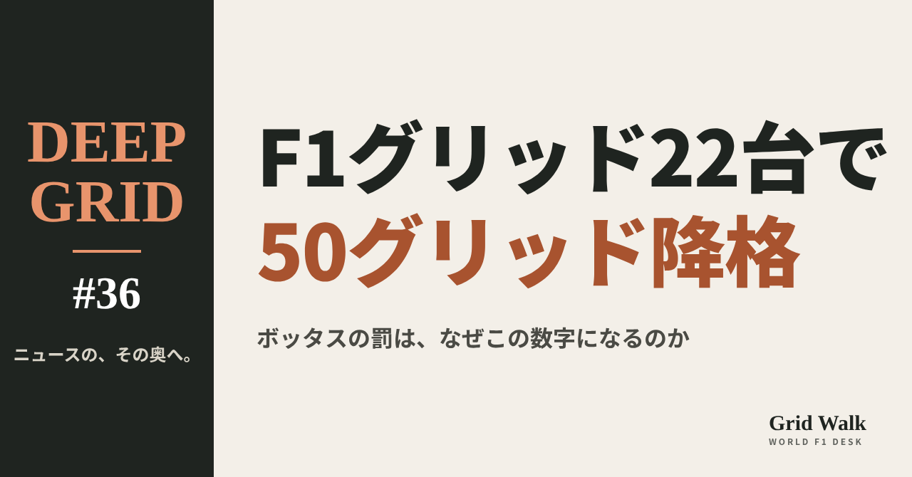
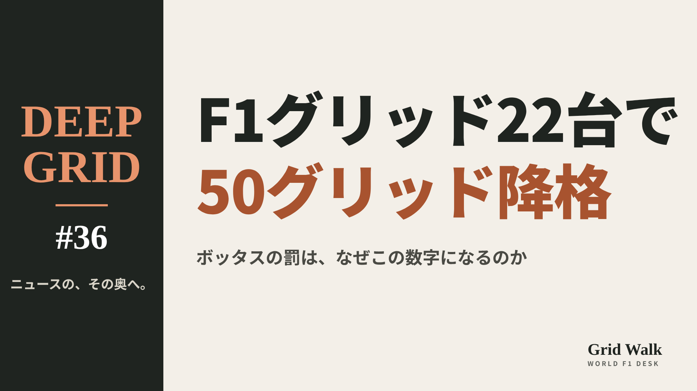
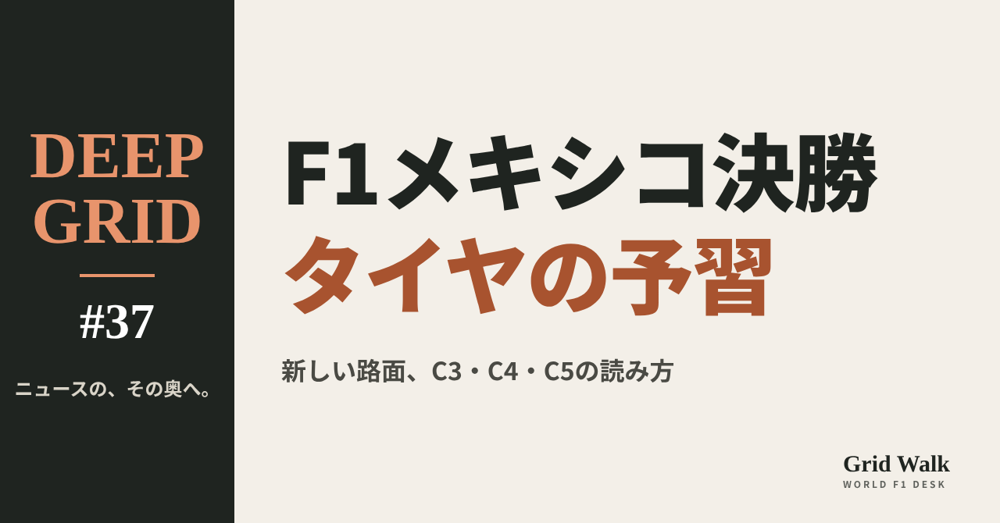
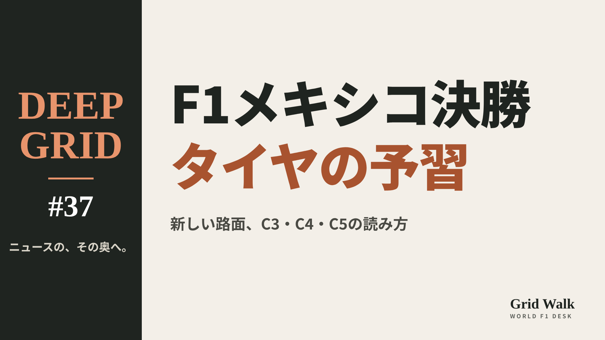

<meta charset="utf-8"><title>DEEP GRID #36・#37 note貼り付け</title>
<style>
/* one column of numbered paste steps; text steps vs image steps differ by marker */
:root{--bg:#F5F4F0;--card:#FFFFFF;--ink:#1D2321;--mute:#5F665F;--line:#DCDAD2;--btn:#1F5FBF;--btnok:#2E8B4F;--img:#E9F3EC;--imgink:#22663B;--sans:'IBM Plex Sans JP','Hiragino Sans','Noto Sans JP',sans-serif}
@media (prefers-color-scheme:dark){:root:not([data-theme="light"]){--bg:#171A19;--card:#202423;--ink:#ECEDE8;--mute:#A3AAA2;--line:#343937;--btn:#4D8BE6;--btnok:#3FA866;--img:#1E2C23;--imgink:#8FD3A6;color-scheme:dark}}
:root[data-theme="dark"]{--bg:#171A19;--card:#202423;--ink:#ECEDE8;--mute:#A3AAA2;--line:#343937;--btn:#4D8BE6;--btnok:#3FA866;--img:#1E2C23;--imgink:#8FD3A6;color-scheme:dark}
body{background:var(--bg);color:var(--ink);font-family:var(--sans);font-size:15px;line-height:1.75;padding:20px 16px 60px}
main{max-width:680px;margin:0 auto;display:grid;gap:28px}
header h1{font-size:22px;margin:0 0 6px;text-wrap:balance}
header p{margin:0;color:var(--mute);font-size:14px}
nav{display:flex;gap:8px;flex-wrap:wrap;margin-top:12px}
nav a{border:1px solid var(--line);border-radius:999px;padding:4px 14px;color:var(--ink);text-decoration:none;font-size:14px;background:var(--card)}
.part h2{font-size:18px;line-height:1.5;margin:0 0 12px;text-wrap:balance;display:flex;gap:10px;align-items:baseline;flex-wrap:wrap}
.tag{font-size:13px;background:var(--ink);color:var(--bg);border-radius:6px;padding:1px 9px}
.steps{list-style:none;margin:0;padding:0;display:grid;gap:12px}
.st{background:var(--card);border:1px solid var(--line);border-radius:12px;padding:12px;min-width:0}
.hd{display:flex;align-items:center;gap:8px;margin-bottom:8px}
.no{width:26px;height:26px;border-radius:50%;background:var(--btn);color:#fff;display:inline-flex;align-items:center;justify-content:center;font-size:13px;font-weight:700;flex:0 0 26px}
.im .no{background:var(--btnok)}
.hd em{font-style:normal;font-size:12px;background:var(--img);color:var(--imgink);border-radius:6px;padding:0 8px}
.bx{font-size:13.5px;line-height:1.7;border:1px solid var(--line);border-radius:8px;padding:8px 10px;max-height:110px;overflow:auto;overflow-wrap:anywhere}
.bx.tall{max-height:150px}.bx p{margin:0 0 6px}.bx h2{font-size:14px;margin:8px 0 4px}.bx a{color:var(--btn)}
.st img{display:block;width:100%;max-width:100%;border:1px solid var(--line);border-radius:8px}
.sub{font-size:12.5px;color:var(--mute);margin:6px 0 0}
.cp{width:100%;margin-top:8px;padding:12px;border:0;border-radius:10px;background:var(--btn);color:#fff;font:600 15px var(--sans);cursor:pointer}
.cp.ok{background:var(--btnok)}.cp.dl{background:var(--btnok)}.cp:focus-visible{outline:3px solid var(--ink);outline-offset:2px}
.xh{font-size:15px;margin:20px 0 10px}
.fb{font-size:13px;line-height:1.7;margin:8px 0 0;padding:8px 10px;border-radius:8px;background:var(--img);color:var(--imgink)}
.opts{display:grid;grid-template-columns:repeat(auto-fill,minmax(240px,1fr));gap:10px}
.opt{min-width:0}.opt img{display:block;width:100%;border:1px solid var(--line);border-radius:8px}
.ol{display:flex;align-items:center;gap:8px;margin-top:6px}.ol b{font-size:13px;flex:0 0 auto}.ol .on{font-size:12.5px;color:var(--mute);flex:1;min-width:0}.ol .cp{width:auto;flex:0 0 auto;padding:9px 14px}.ol .cp{margin:0;padding:9px}
.toast{font-size:13px;color:var(--mute);margin-top:6px}
</style>
<main><header><h1>DEEP GRID #36・#37 note貼り付け</h1><p>2本あります。青い番号は文章、緑は画像です。</p><nav><a href="#p1">#36</a><a href="#p2">#37</a></nav></header><section class="part" id="p1"><h2><span class="tag">DEEP GRID #36</span>グリッドは22台なのに、なぜボッタスは「50グリッド降格」なのか【DEEP GRID #36】</h2><ol class="steps">
<li class="st im"><div class="hd"><span class="no">1</span><b>見出し画像</b><em>画像</em></div><button class="cp dl" data-img="img/bottas-50-place-penalty.png" data-name="deep-bottas-50-place-penalty_見出し画像.png">ダウンロード</button></li>
<li class="st"><div class="hd"><span class="no">2</span><b>タイトル</b></div><div class="bx" id="p1t">グリッドは22台なのに、なぜボッタスは「50グリッド降格」なのか【DEEP GRID #36】</div><button class="cp" data-plain="p1t">タイトルをコピー</button></li>
<li class="st"><div class="hd"><span class="no">3</span><b>本文</b></div><div class="bx tall" id="p1r"><p>メキシコシティGPで、キャデラックのバルテリ・ボッタスに「50グリッド降格」が出た。並ぶ車は22台しかない。それでも50になるのは、この数字がスタート位置ではなく、部品ごとの罰の足し算だからだ。FIAの文書から50を自分で数え直し、16でも50でも行き先が同じになるグリッドの並べ方と、ボッタスが最後尾の22番手ではなく21番手になった理由を読む。</p><p>データの表と、出典8件はサイトで → <a href="https://f1gridwalk.github.io/deep/bottas-50-place-penalty/?utm_source=note&amp;utm_campaign=bottas-50-place-penalty">https://f1gridwalk.github.io/deep/bottas-50-place-penalty/?utm_source=note&amp;utm_campaign=bottas-50-place-penalty</a></p><h2>先に結論</h2><p>① ボッタス（キャデラック）は、メキシコシティGPの金曜に、パワーユニットの5つの部品（ICE、ターボ、MGU-K、ES、CE）を、今季の上限を超えて新しくした。FIAのスチュワードは「50グリッド降格」を決めた。</p><p>② 50は、部品ごとの罰の足し算だ。上限を超えた部品が、その種類で初めての超過なら10、2回目からは5。FIAの技術代表の報告では、5つとも今季の上限をちょうど1つ超えた部品なので、10×5＝50になる。文書の数字と、規則の表で数えた数字は合う。</p><p>③ 2026年の上限は、技術代表の報告ではICEとターボが4基、MGU-K・ES・CEが3基。規則の基本の数に、新しいPUの年の「追加の1基」が足されている。</p><p>④ 降格の合計が15を超えると、16でも50でも行き先は同じで、予選で順位がついたほかの全員の後ろに並ぶ（B2.5.4 b iv）。50は「50番目」という意味ではない。</p><p>⑤ 暫定のスターティンググリッドで、ボッタスは21番手。予選で失格になったローソン（レーシングブルズ）は、スチュワードの許可で出走でき、ボッタスのさらに後ろの22番手になった。予選の順位がなく出走を認められた人の決まり（B2.5.4 b v）に当てはめると、この並びになる。</p><p><strong>50グリッド降格、あなたなら別の罰の形を考えますか？</strong></p><h2>続きは F1 Grid Walk で</h2><p>ここから先の「50は「場所」ではなく「足し算」」「50を自分で数える」「16でも50でも、行き先は同じ」「なぜ22番手ではなく、21番手なのか」は、サイトで読めます。文書で見る流れ（現地時間）、2026年に使える部品の数（ボッタスの場合）、規則の原文（競技規則 第9版、2026年10月1日付）、暫定スターティンググリッドの後ろの方（文書60）の表も載せています。</p><p><strong>DEEP GRID #36「グリッドは22台なのに、なぜボッタスは「50グリッド降格」なのか」</strong></p><p><a href="https://f1gridwalk.github.io/deep/bottas-50-place-penalty/">https://f1gridwalk.github.io/deep/bottas-50-place-penalty/</a></p><p>━━━━━━━━━━</p><p><strong>F1 Grid Walk では、世界のF1ニュースを毎日日本語でまとめています。</strong></p><p>海外の記事の要約を、毎日載せています。</p><p>ほかの海外記事も読みたい方は、F1 Grid Walkへ。</p><p><a href="https://f1gridwalk.github.io/">https://f1gridwalk.github.io/</a></p><p>━━━━━━━━━━</p><p><a href="https://www.fia.com/system/files/decision-document/2026_mexico_city_grand_prix_-_infringement_-_car_77_-_pu_elements.pdf">出典：FIA</a></p><p><a href="https://www.fia.com/system/files/decision-document/2026_mexico_city_grand_prix_-_new_pu_elements_for_this_competition.pdf">出典：FIA</a></p><p><a href="https://www.fia.com/system/files/decision-document/2026_mexico_city_grand_prix_-_provisional_starting_grid.pdf">出典：FIA</a></p><p><a href="https://www.fia.com/system/files/decision-document/2026_mexico_city_grand_prix_-_decision_-_car_30_-_permission_to_start.pdf">出典：FIA</a></p><p><a href="https://www.fia.com/system/files/documents/fia_2026_f1_regulations_-_section_b_sporting_-_iss_09_-_2026-10-01.pdf">出典：FIA</a></p><p><a href="https://www.formula1.com/en/latest/article/bottas-set-for-grid-penalty-at-mexico-city-grand-prix-after-power-unit-changes.2J7hkopU6hrvgFvlK82cip">出典：F1公式サイト</a></p><p><a href="https://www.grandprix.com/news/bottas-handed-50-place-grid-penalty-in-mexico.html">出典：Grandprix.com</a></p><p><a href="https://racingnews365.com/two-f1-drivers-set-for-mexico-city-grand-prix-grid-penalties">出典：RacingNews365</a></p></div><button class="cp" data-rich="p1r">本文をコピー</button></li>
<li class="st"><div class="hd"><span class="no">4</span><b>ハッシュタグ</b></div><div class="bx" id="p1h">#F1 #F1jp #ボッタス #キャデラック #F1ルール #グリッド降格 #DEEPGRID</div><button class="cp" data-plain="p1h">タグをコピー</button></li>
</ol><h3 class="xh">X</h3><ol class="steps">
<li class="st im"><div class="hd"><b>X用の画像</b><em>画像</em></div><button class="cp dl" data-img="img/x_bottas-50-place-penalty.png" data-name="x_deep-bottas-50-place-penalty.png">ダウンロード</button></li>
<li class="st"><div class="hd"><b>① noteをシェアするときの文</b></div><div class="bx" id="p1x0">グリッドは22台なのに、ボッタスは50グリッド降格。PU部品5種類がどれも初めての上限超えで、10×5＝50。15を超えるとどこに並ぶのかまで、FIAの文書から読むDEEP GRID #36をnoteにまとめました #F1jp #ボッタス</div><button class="cp" data-plain="p1x0">コピー</button></li>
<li class="st"><div class="hd"><b>② ①への返信</b></div><div class="bx" id="p1x1">ほかの海外記事も読みたい方は、F1 Grid Walkへ。
https://f1gridwalk.github.io/deep/bottas-50-place-penalty/?utm_source=x&amp;utm_campaign=bottas-50-place-penalty</div><button class="cp" data-plain="p1x1">コピー</button></li>
<li class="st"><div class="hd"><b>③ ②への返信</b></div><div class="bx" id="p1x2">毎日の海外F1ニュースは、日本語でこちらにまとめています。
https://f1gridwalk.github.io/</div><button class="cp" data-plain="p1x2">コピー</button></li>
</ol></section><section class="part" id="p2"><h2><span class="tag">DEEP GRID #37</span>F1メキシコ決勝のタイヤは、新しい路面でどう読めばいいのか【DEEP GRID #37】</h2><ol class="steps">
<li class="st im"><div class="hd"><span class="no">1</span><b>見出し画像</b><em>画像</em></div><button class="cp dl" data-img="img/mexico-tyres-resurfaced.png" data-name="deep-mexico-tyres-resurfaced_見出し画像.png">ダウンロード</button></li>
<li class="st"><div class="hd"><span class="no">2</span><b>タイトル</b></div><div class="bx" id="p2t">F1メキシコ決勝のタイヤは、新しい路面でどう読めばいいのか【DEEP GRID #37】</div><button class="cp" data-plain="p2t">タイトルをコピー</button></li>
<li class="st"><div class="hd"><span class="no">3</span><b>本文</b></div><div class="bx tall" id="p2r"><p>メキシコシティGPの路面は、今年その大部分が敷き直された。タイヤはいちばん柔らかい3種類、C3・C4・C5。ピレリは事前に「1ストップのレースを後押ししうる」と見る一方で、後輪の負担、グレイニング、1コーナーでのロックアップに注意を促した。決勝の前に、タイヤの割り当て、FIAの文書にある数字、予選のあとのピレリの見立てを並べて、日曜のタイヤの読み方を整理する。</p><p>データの表と、出典7件はサイトで → <a href="https://f1gridwalk.github.io/deep/mexico-tyres-resurfaced/?utm_source=note&amp;utm_campaign=mexico-tyres-resurfaced">https://f1gridwalk.github.io/deep/mexico-tyres-resurfaced/?utm_source=note&amp;utm_campaign=mexico-tyres-resurfaced</a></p><h2>先に結論</h2><p>① エルマノス・ロドリゲス・サーキットの路面は、ターン16から1コーナーまでと、ターン7からターン16までが敷き直された。ほぼ元のままなのは第1セクターだけだ。ピレリは、新しいアスファルトはふつうグリップが高く粗さが小さいが、実際の性質は週末の早いうちに確かめる必要がある、と説明した（F1公式サイト）。</p><p>② タイヤはハードがC3、ミディアムがC4、ソフトがC5。1人あたりハード2セット、ミディアム3セット、ソフト8セットで、Q3に進んだドライバーのために、ソフトが1セット取っておかれる。FIAの文書は、Q3のタイヤをC5、決勝の「義務タイヤ」をC3とC4としている。競技規則では、雨用タイヤを使わない限り、決勝で2種類以上のドライタイヤを使い、そのうち1種類以上は義務タイヤ（メキシコではC3かC4）でなければならない。守らなければ失格だ（レースが中断されて再開できない場合を除く）。</p><p>③ FIAの文書には、決勝で守る数字も並ぶ。走り出すときの最低の内圧は前25.5psi・後ろ24.5psi、車輪の傾き（キャンバー角）の限度は前−3°・後ろ−1.75°。日曜の朝にタイヤを装着する作業の締め切りは「決勝の4時間前」（日本時間午前1時）だ。</p><p>④ ピレリは事前に、メキシコは昔からタイヤへの負担が小さく、1ストップのレースを後押ししうると見た。ただし、いちばん負担の大きい後輪の管理、薄い空気で車が滑ることによるグレイニング、1コーナーへの長い直線でのロックアップには注意が要るとした。</p><p>⑤ 予選のあと、ピレリのダリオ・マラフスキは「1ストップも2ストップも競争力のある選択肢」と話した。1ストップならミディアムで出て35〜41周目にソフトへ、2ストップならソフト、ミディアム、ソフトの順。ハードは有力には見えないが、レースの早いうちのニュートラライズ（セーフティカーなど）があれば筋書きが変わるという。</p><p><strong>メキシコの決勝、1ストップと2ストップ、どちらで来ると思いますか？</strong></p><h2>続きは F1 Grid Walk で</h2><p>ここから先の「再舗装：分かっていたこと、走って分かったこと」「13セットの割り振りと、「C3とC4」の義務」「FIAの文書の数字：内圧、キャンバー角、4時間前」「日曜の決勝：タイヤのどこを見ればいいか」は、サイトで読めます。タイヤの割り当てとFIAの文書の数字（2026年メキシコシティGP）、再舗装の範囲、ピレリの見方の移り変わり、マラフスキが挙げた決勝の作戦の表も載せています。</p><p><strong>DEEP GRID #37「F1メキシコ決勝のタイヤは、新しい路面でどう読めばいいのか」</strong></p><p><a href="https://f1gridwalk.github.io/deep/mexico-tyres-resurfaced/">https://f1gridwalk.github.io/deep/mexico-tyres-resurfaced/</a></p><p>━━━━━━━━━━</p><p><strong>F1 Grid Walk では、世界のF1ニュースを毎日日本語でまとめています。</strong></p><p>海外の記事の要約を、毎日載せています。</p><p>ほかの海外記事も読みたい方は、F1 Grid Walkへ。</p><p><a href="https://f1gridwalk.github.io/">https://f1gridwalk.github.io/</a></p><p>━━━━━━━━━━</p><p><a href="https://www.fia.com/system/files/documents/fia_2026_f1_regulations_-_section_b_sporting_-_iss_09_-_2026-10-01.pdf">出典：FIA</a></p><p><a href="https://www.formula1.com/en/latest/article/what-tyres-will-the-teams-and-drivers-have-for-the-2026-mexico-city-grand-prix.3a3o08HqrmdQ9IqXYUwJrH">出典：F1公式サイト</a></p><p><a href="https://www.fia.com/system/files/decision-document/2026_mexico_city_grand_prix_-_competition_notes_-_pirelli_preview.pdf">出典：FIA</a></p><p><a href="https://www.formula1.com/en/latest/article/what-the-teams-said-qualifying-in-mexico-city-2026.OeV40dsukK0h4mpxdkqoj">出典：F1公式サイト</a></p><p><a href="https://www.grandprix247.com/formula-1-news/softest-pirelli-compounds-and-resurfaced-mexico-city-circuit-set-to-influence-strategy">出典：GRANDPRIX247</a></p><p><a href="https://scuderiafans.com/2026-mexico-gp-tyre-strategy-pirelli-chooses-softest-compounds-as-new-asphalt-adds-uncertainty/">出典：ScuderiaFans</a></p><p><a href="https://www.pitpass.com/81378/Mexico-City-Grand-Prix-Preview-Pirelli">出典：Pitpass</a></p></div><button class="cp" data-rich="p2r">本文をコピー</button></li>
<li class="st"><div class="hd"><span class="no">4</span><b>ハッシュタグ</b></div><div class="bx" id="p2h">#F1 #F1jp #メキシコGP #ピレリ #F1タイヤ #DEEPGRID</div><button class="cp" data-plain="p2h">タグをコピー</button></li>
</ol><h3 class="xh">X</h3><ol class="steps">
<li class="st im"><div class="hd"><b>X用の画像</b><em>画像</em></div><button class="cp dl" data-img="img/x_mexico-tyres-resurfaced.png" data-name="x_deep-mexico-tyres-resurfaced.png">ダウンロード</button></li>
<li class="st"><div class="hd"><b>① noteをシェアするときの文</b></div><div class="bx" id="p2x0">メキシコは路面の大部分が新しくなり、タイヤはC3・C4・C5。決勝ではC3かC4を必ず使う決まりです。ピレリの見方とFIAの文書から読むDEEP GRID #37をnoteにまとめました #F1jp #メキシコGP</div><button class="cp" data-plain="p2x0">コピー</button></li>
<li class="st"><div class="hd"><b>② ①への返信</b></div><div class="bx" id="p2x1">ほかの海外記事も読みたい方は、F1 Grid Walkへ。
https://f1gridwalk.github.io/deep/mexico-tyres-resurfaced/?utm_source=x&amp;utm_campaign=mexico-tyres-resurfaced</div><button class="cp" data-plain="p2x1">コピー</button></li>
<li class="st"><div class="hd"><b>③ ②への返信</b></div><div class="bx" id="p2x2">毎日の海外F1ニュースは、日本語でこちらにまとめています。
https://f1gridwalk.github.io/</div><button class="cp" data-plain="p2x2">コピー</button></li>
</ol></section></main><script>
function done(b,msg){const t=b.dataset.t||b.textContent;b.dataset.t=t;b.classList.add('ok');b.textContent=msg||'コピーしました';setTimeout(()=>{b.classList.remove('ok');b.textContent=t},2000)}
function selectEl(el){const r=document.createRange();r.selectNodeContents(el);const s=getSelection();s.removeAllRanges();s.addRange(r)}
async function rich(el,b){
  try{await navigator.clipboard.write([new ClipboardItem({'text/html':new Blob([el.innerHTML],{type:'text/html'}),'text/plain':new Blob([el.innerText],{type:'text/plain'})})]);done(b);return}catch(e){}
  selectEl(el);let ok=false;try{ok=document.execCommand('copy')}catch(e){}
  if(ok){getSelection().removeAllRanges();done(b)}else{done(b,'選択しました。コピーしてください')}}
async function plain(el,b){
  try{await navigator.clipboard.writeText(el.innerText);done(b);return}catch(e){}
  selectEl(el);let ok=false;try{ok=document.execCommand('copy')}catch(e){}
  if(ok){getSelection().removeAllRanges();done(b)}else{done(b,'選択しました。コピーしてください')}}
let dlns=null;(async()=>{try{dlns=await window.claude?.use?.("downloads")}catch(e){dlns=null}})();
async function img(src,b){
  b.dataset.t=b.dataset.t||b.textContent;
  if(!dlns){try{dlns=await window.claude?.use?.("downloads")}catch(e){}}
  if(!dlns){b.textContent='ダウンロードできませんでした';setTimeout(()=>{b.textContent=b.dataset.t},3500);return}
  try{const blob=await fetch(src).then(r=>r.blob());b.textContent='保存の確認を開いています…';
    await dlns.save({filename:b.dataset.name,data:blob});done(b,'ダウンロードしました')}
  catch(e){const c=e&&e.code;b.textContent=c==='declined'?'キャンセルしました':c==='rate_limited'?'少し待ってからもう一度押してください':'ダウンロードできませんでした';setTimeout(()=>{b.textContent=b.dataset.t},3500)}}
document.querySelectorAll('.cp').forEach(b=>b.addEventListener('click',()=>{
  if(b.dataset.rich)rich(document.getElementById(b.dataset.rich),b);
  else if(b.dataset.plain)plain(document.getElementById(b.dataset.plain),b);
  else img(b.dataset.img,b)}));
</script>